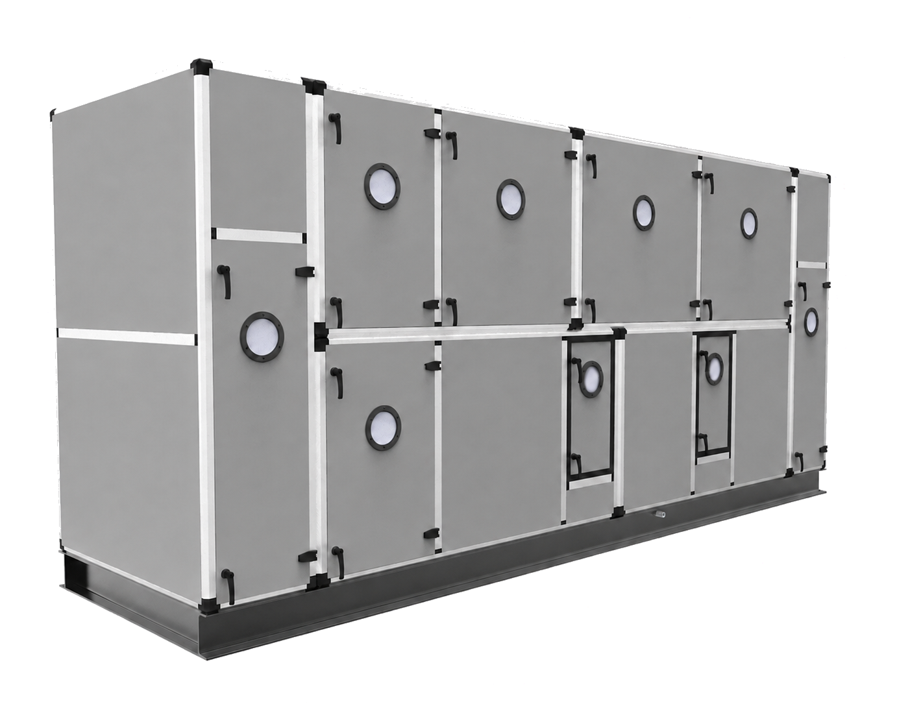
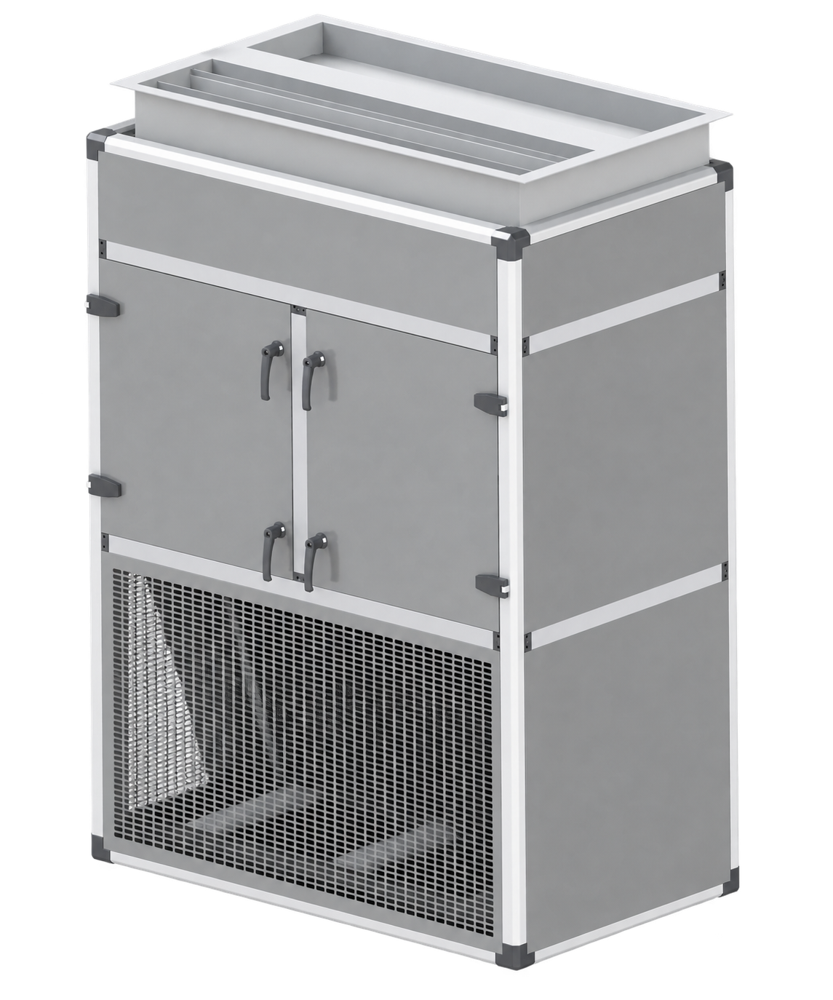
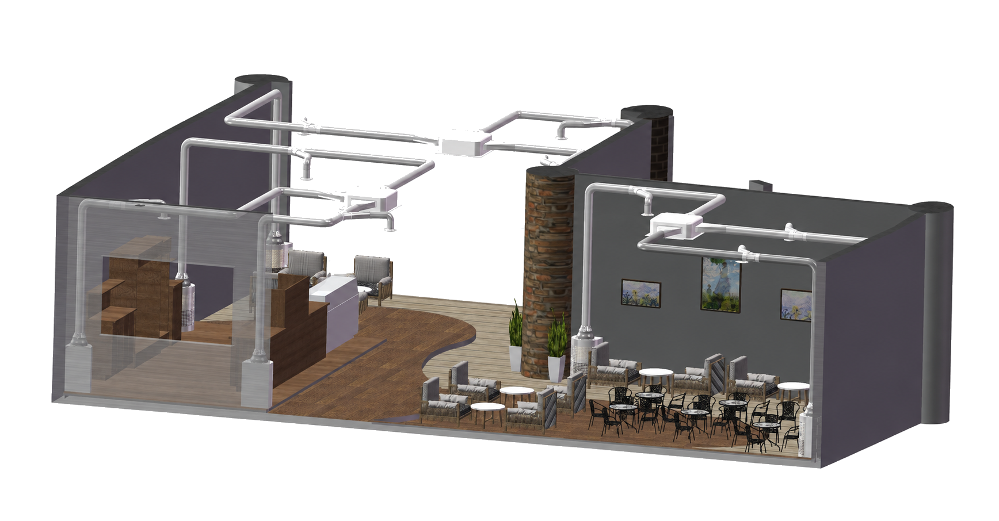
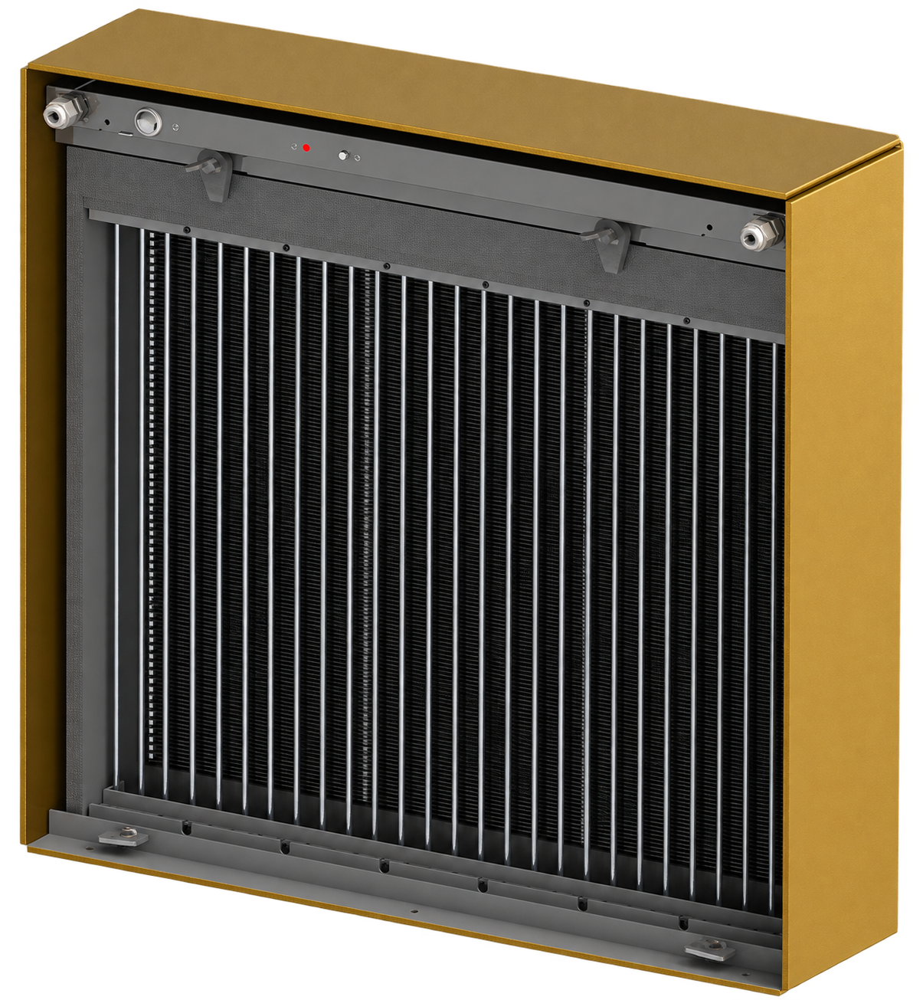

현장 맞춤형 모듈 구조
설치 공간, 요구 풍량과 공정 조건에 따라 장비의 섹션과 배치를 구성합니다.
HVAC / CATEGORY 02
공기의 처리부터 운전 데이터까지, 프로젝트 환경에 맞춰 설계하는 통합 공조 시스템입니다.
05 / ECO AIR HANDLING UNIT
공간과 공정에 필요한 공기를 만들고, 실제 운전 조건에 맞춰 유연하게 구성하는 공조 플랫폼입니다.
팬, 냉·난방 코일과 필터를 기본으로 현장의 목적에 필요한 기능을 조합합니다. 위생적인 패널 구조와 관리 접근성을 고려해 산업시설, 생산공장과 일반 건축물의 공기조화 요구에 대응합니다.
프로젝트 구성 상담 ↗

ENGINEERED FOUNDATION
공조기의 기본 성능뿐 아니라 설치 이후의 위생 관리, 열 손실과 유지관리 동선까지 함께 검토합니다.
설치 공간, 요구 풍량과 공정 조건에 따라 장비의 섹션과 배치를 구성합니다.
내부 접근성과 청결 관리를 고려한 패널 및 프레임 구조를 적용합니다.
단열 패널 구조로 장비 외부와 내부 사이의 불필요한 열 전달을 줄입니다.
기계실형 AHU와 옥상 설치형 RTU 등 프로젝트 환경에 맞는 구성을 검토합니다.
06 / BIO INTEGRATED HVAC
공기를 정화하는 장치와 공간의 기류를 함께 설계해, 사람이 머무는 영역에 더 깨끗한 공기를 전달합니다.
다중이용시설과 실내 밀집 공간에서 오염 공기를 포집·정화하고, 정제된 공기의 공급 위치와 흐름을 제어합니다. 냉난방 및 환기 설비와 통합할 수 있어 쾌적성과 감염 확산 위험 저감을 하나의 공조 흐름으로 관리합니다.
적용 환경 상담 ↗
BIO AIR ENGINEERING
필터 성능만 보는 것이 아니라 오염 공기가 발생하고 이동하는 경로, 정화된 공기가 도달해야 할 생활 영역까지 함께 고려합니다.
바이러스성 에어로졸과 미세 입자가 실내에 머무르거나 확산되기 전에 흡입 지점을 중심으로 공기의 흐름을 유도합니다.
대공간 운전에 필요한 처리 용량을 고려해 오염 입자를 포집하고 정화된 공기를 안정적으로 공급합니다.
사람이 실제로 머무는 높이와 위치에 맞춰 급·배기 흐름을 구성해 공간 전체의 공기 교환을 돕습니다.
기존 냉난방 및 환기 설비와 연계해 온도, 쾌적성, 정화와 공기 흐름을 함께 관리할 수 있습니다.
대중교통 시설 · 의료 및 공공시설 · 다중이용시설 · 상업공간 · 실내 밀집 환경
공기 정화 및 감염 확산 저감 효과는 공간 구조, 풍량, 필터 구성, 설치 위치와 운전 조건에 따라 달라질 수 있으며 프로젝트별 기술 검토를 통해 구성합니다.
07 / IONIC ELECTRIC FILTER
미세 입자에 전하를 부여하고 전기장의 힘으로 포집하는 2단계 전기집진 필터입니다.
공기가 통과하는 첫 단계에서 입자를 이온화하고, 다음 단계에서 대전된 입자를 집진 플레이트로 유도합니다. 높은 미세 입자 제거 성능과 낮은 압력 손실을 함께 지향해 공조기의 에너지 부담과 필터 관리 효율을 고려합니다.
IEF 적용 검토 ↗
TESTED PERFORMANCE
제공된 성능시험 결과 중 제품 선정에 필요한 핵심 정보만 정리했습니다. 모든 수치는 명시된 시험 조건에 따른 결과입니다.
2.5 m/s 시험 조건의 미세입자 제거율
2.5 m/s 시험 조건의 입자 제거율
2.5 m/s 시험 조건의 압력 손실
풍량 3,400 CMH 조건의 제공 시험 결과입니다.
H1N1 시험주 대상 제공 시험 결과입니다.
1시간 시험 기준 NH₃ 99.07%, H₂S 99% 결과가 제시되었습니다.
병원 · 제약 · 식품시설 · 축사 및 재배시설 · 저온창고 · 물류창고 · 대형마트
입자 제거율: 성능시험 1000010029 · 오존 시험: 성능시험 1000009489 · 바이러스 시험: WTS2025-0194-1. 실제 성능은 풍량, 오염 농도, 장비 구성과 유지관리 상태에 따라 달라질 수 있습니다.
05 / ECO AHU · PROJECT-BUILT FUNCTIONS
운영 환경과 에너지 전략에 따라 각 기능을 독립적으로 검토하고 하나의 공조 시스템으로 연결합니다.
외기 조건이 유리할 때 실외 공기를 활용해 냉방 부하를 낮춥니다. 연중 냉방이 필요한 전산실과 산업시설의 운전 효율 개선에 적합합니다.
외기 조건 감지 · 댐퍼 제어 · 냉방 부하 절감외부 오염물질이 민감한 환경에서 열교환을 통해 외기의 냉열을 활용합니다. 실내 청정도를 유지하면서 계절 에너지를 이용합니다.
공기 분리 · 열교환 · 중요 설비 보호배터리 에너지저장장치의 형상, 발열 조건과 설치 환경을 반영해 맞춤형 냉각 흐름을 설계합니다.
발열 대응 · 맞춤 기류 · 안정적 운전 환경필터와 실내 CO₂ 등 환경 센서를 연계해 필요한 환기량을 관리하고 쾌적한 실내 공기 환경을 지원합니다.
여과 · 환경 센싱 · 환기량 관리05 / ECO AHU · AIR HANDLING CONTROL SYSTEM
공조 장비의 센서 데이터를 한곳에 모으고, 현재 상태를 이해하기 쉬운 화면으로 보여주며, 현장과 원격에서 운전을 관리합니다.
장비 상태와 주요 센서값, 알람을 한 화면에서 확인해 현장의 판단 속도를 높입니다.
운영 환경에 따라 현장 제어와 원격 운전을 연결하고 변화에 신속하게 대응합니다.
실시간·누적 운전 자료를 정리해 성능 확인과 에너지 운영 검토에 활용합니다.
요구 풍량과 시스템 상태를 반영해 팬과 주요 장치가 필요한 만큼 운전하도록 제어합니다.
실제 제어 범위와 연계 방식은 장비 구성, 센서 및 현장 시스템 조건에 따라 설계됩니다. 에너지 개선 효과는 운전 환경에 따라 달라질 수 있습니다.
AIR SYSTEM / NEXT
Air System의 추가 제품군은 기술 자료 정리와 함께 순차적으로 상세 정보를 공개합니다.
센서 기반 실내 환경 관리